Fichas de Arte y cultura
125 fichas de Arte y cultura en español para imprimir (PDF), sin preparación y con solucionario: comprensión lectora, búsquedas del tesoro y más, filtrables por grado.
125 recursos
Grado
Por grado: 1.º de primaria · 1.º de ESO · 5.º de primaria · 3.º de ESO
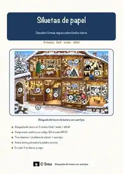
«Siluetas de papel» – Búsqueda del tesoro de lectura
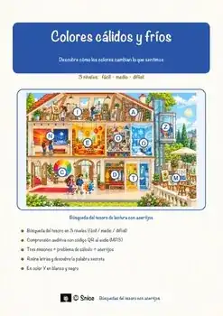
«Colores cálidos y fríos» – Búsqueda del tesoro de lectura
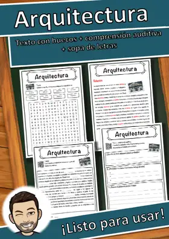
Arquitectura – Ficha: texto con huecos, comprensión auditiva y sopa de letras
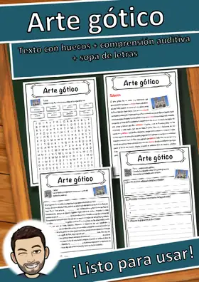
Arte gótico – Ficha: texto con huecos, comprensión auditiva y sopa de letras
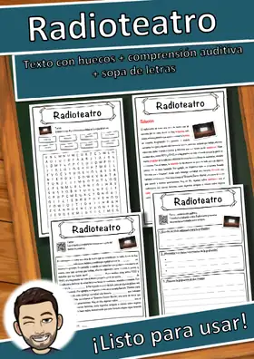
Radioteatro – Ficha: texto con huecos, comprensión auditiva y sopa de letras
Museo del Louvre – Ficha: texto con huecos, comprensión auditiva y sopa de letras
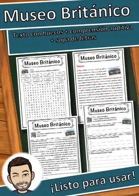
Museo Británico – Ficha: texto con huecos, comprensión auditiva y sopa de letras

Museo – Ficha de lectura: texto con huecos, comprensión auditiva y sopa de letras

Literatura – Ficha de lectura: texto con huecos, comprensión auditiva y sopa de letras
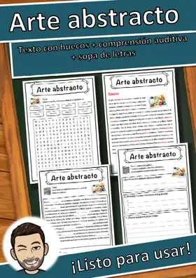
Arte abstracto – Ficha: texto con huecos, comprensión auditiva y sopa de letras
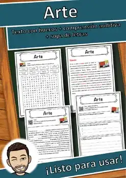
Arte – Ficha de lectura: texto con huecos, comprensión auditiva y sopa de letras
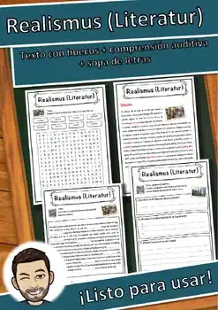
Realismo (literatura) – Ficha de lectura: texto con huecos, comprensión auditiva y sopa de letras
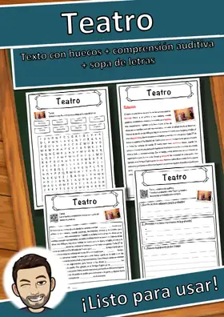
Teatro – Ficha: texto con huecos, comprensión auditiva y sopa de letras
Lenguas retorromances – Ficha: texto con huecos, comprensión auditiva y sopa de letras
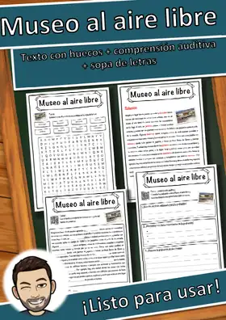
Museo al aire libre – Ficha: texto con huecos, comprensión auditiva y sopa de letras
Pintura rupestre en cuevas – Ficha: texto con huecos, comprensión auditiva y sopa de letras
Literatura infantil y juvenil – Ficha: texto con huecos, comprensión auditiva y sopa de letras
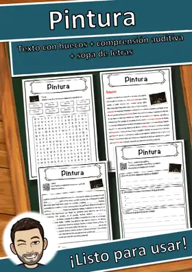
Pintura – Ficha: texto con huecos, comprensión auditiva y sopa de letras
Mitología romana – Ficha: texto con huecos, comprensión auditiva y sopa de letras
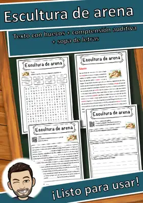
Escultura de arena – Ficha: texto con huecos, comprensión auditiva y sopa de letras
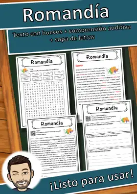
Romandía – Ficha: texto con huecos, comprensión auditiva y sopa de letras
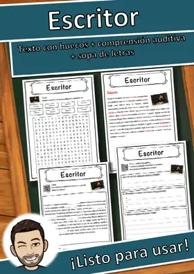
Escritor – Ficha: texto con huecos, comprensión auditiva y sopa de letras
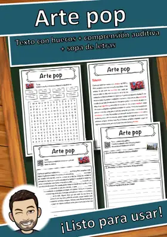
Arte pop – Ficha: texto con huecos, comprensión auditiva y sopa de letras
Ficha del artista William Turner - (Español)
Ficha del artista William Turner - (Español)
Ficha del artista Wassily Kandinsky - (Español)
Ficha del artista Wassily Kandinsky - (Español)
Ficha del artista Vincent van Gogh - (Español)
Ficha del artista Vincent van Gogh - (Español)
Ficha del artista Sandro Botticelli - (Español)
Ficha del artista Sandro Botticelli - (Español)
Ficha del artista Salvador Dali - (Español)
Ficha del artista Salvador Dali - (Español)
Ficha del artista Rembrandt van Rijn - (Español)
Ficha del artista Rembrandt van Rijn - (Español)
Ficha del artista Pierre-Auguste Renoir - (Español)
Ficha del artista Pierre-Auguste Renoir - (Español)
Ficha del artista Peter Paul Rubens - (Español)
Ficha del artista Peter Paul Rubens - (Español)
Ficha del artista Paul Klee - (Español)
Ficha del artista Paul Klee - (Español)
Ficha del artista Paul Gauguin - (Español)
Ficha del artista Paul Gauguin - (Español)
Ficha del artista Paul Cézanne - (Español)
Ficha del artista Paul Cézanne - (Español)
Ficha del artista Pablo Picasso - (Español)
Ficha del artista Pablo Picasso - (Español)
Ficha del artista Michelangelo Caravaggio - (Español)
Ficha del artista Michelangelo Caravaggio - (Español)
Ficha del artista Michelangelo (Buonarroti) - (Español)
Ficha del artista Michelangelo (Buonarroti) - (Español)
Ficha del artista Max Liebermann - (Español)
Ficha del artista Max Liebermann - (Español)
Ficha del artista Marc Chagall - (Español)
Ficha del artista Marc Chagall - (Español)
Ficha del artista Leonardo da Vinci - (Español)
Ficha del artista Leonardo da Vinci - (Español)
Ficha del artista Joan Miró - (Español)
Ficha del artista Joan Miró - (Español)
Ficha del artista Jan Vermeer - (Español)
Ficha del artista Jan Vermeer - (Español)
Ficha del artista Henri Matisse - (Español)
Ficha del artista Henri Matisse - (Español)
Ficha del artista Gustav Klimt - (Español)
Ficha del artista Gustav Klimt - (Español)
Ficha del artista Giovanni Antonio Canal - (Español)
Ficha del artista Giovanni Antonio Canal - (Español)
Ficha del artista Franz Marc - (Español)
Ficha del artista Franz Marc - (Español)
Ficha del artista Francisco José de Goya - (Español)
Ficha del artista Francisco José de Goya - (Español)
Ficha del artista Édouard Manet - (Español)
Ficha del artista Édouard Manet - (Español)
No se encontraron recursos. Prueba con otra palabra o con otro filtro.